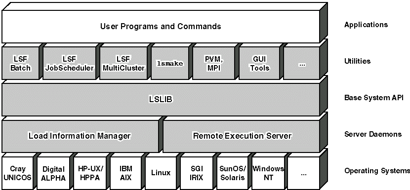
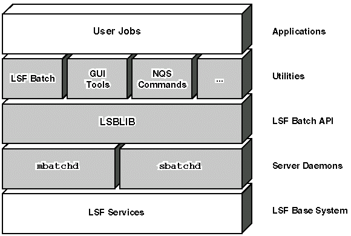

[Contents] [Prev] [Next] [End]
The first two chapters of this guide give a quick introduction to load sharing and LSF. You should be able to begin using LSF after reading these chapters. The rest of the guide contains more detailed information on LSF features and commands.
LSF, the Load Sharing Facility, is a general purpose distributed computing system from Platform Computing Corporation. It is packaged as a suite of separately licensed components, including LSF Batch, LSF JobScheduler, and LSF MultiCluster all running on the LSF Base system.
LSF unites a group of UNIX and NT computers into a single system to make better use of the resources on a network. Hosts from various vendors can be integrated into a seamless system. You can do your job and leave the system to find the best host to run your programs.
LSF supports sequential and parallel applications running as interactive and batch jobs. LSF also allows new distributed applications to be developed through C programming libraries and a tool kit of programs for writing shell scripts.
With LSF you can use a network of heterogeneous computers as a single system. You are no longer limited to the resources on your own workstation. You do not need to rewrite or change your programs to take advantage of LSF. You only need to learn a few simple commands and the resources of your entire network will be within reach.
LSF can automatically select hosts in a heterogeneous environment based on the current load conditions and the resource requirements of the applications.
With LSF, remotely run jobs behave just like jobs run on the local host. Even jobs with complicated terminal controls behave transparently to the user as if they were run locally.
LSF can run batch jobs automatically when required resources become available, or when systems are lightly loaded. LSF maintains full control over the jobs, including the ability to suspend and resume the jobs based on load conditions.
LSF can run both sequential and parallel jobs. Some jobs speed up substantially when run on a group of idle or lightly loaded hosts. For example, the lsmake program allows you to do your software builds or automated tests many times faster than with traditional make.
With LSF, you can transparently run software that is not available on your local host. For example, you could run a CAD tool that is only available on an HP host from your Sun workstation. The job would run on the HP and be displayed transparently on your Sun system.
With LSF, the system administrators can easily control access to resources such as:
LSF provides mechanisms for resource and job accounting. This information can help the administrator to find out which applications or users are consuming resources, at what times of the day (or week) the system is busy or idle, and whether certain resources are overloaded and need to be expanded or upgraded.
LSF allows you to write your own load sharing applications, both as shell scripts using the lstools programs and as compiled programs using the LSF application programming libraries.
LSF provides comprehensive resource and load information about all hosts in the network.
Resource information includes the number of processors on each host, total physical memory available to user jobs, the type, model, and relative speed of each host, the special resources available on each host, and the time windows when a host is available for load sharing.
Dynamic load information includes:
LSF divides jobs into either interactive or batch jobs. Interactive jobs are run from a terminal or X Window System display. These jobs start running as soon as you enter a command. You then interact directly with the program as it runs.
LSF lets you run interactive jobs from your terminal or workstation on any computer in your network. All your input and output is transparently sent between local host and the job execution host.
Batch processing can provide more efficient execution of resource intensive jobs. Rather than running immediately when you enter a command, batch jobs are kept on a list of jobs called a queue. The LSF Batch system runs jobs from the queue when the appropriate resources are available. By making sure that every job has the resources it needs, the resource intensive jobs can be processed more efficiently.
In LSF, batch queues can have access to all the hosts in your network. Your job can run as soon as any suitable host becomes available. You do not need to hunt around your network to find an idle host.
Batch processing also allows the system administrator to specify policies so that interactive use and resource intensive jobs do not interfere with each other. You can submit 'interactive' jobs to the LSF Batch system to take advantage of the queues and queuing policies. You can interact with your job from a terminal or X display. However, an interactive batch job is subject to the policies of the submission queue, so it is possible that it may not be dispatched immediately.
Load sharing in LSF is based on clusters. A cluster is simply a group of hosts. Each cluster has one or more LSF administrators. An administrator is a user account that has permission to change the LSF configuration and perform other maintenance functions. An LSF administrator decides how the hosts are grouped together.
A cluster can contain a mixture of host types. By putting all hosts types into a single cluster, you can have easy access to the resources available on all host types.
Clusters are normally set up based on administrative boundaries. LSF clusters work best when each user has an account on all hosts in the cluster, and user files are shared among the hosts so that they can be accessed from any host. This way LSF can send a job to any host. You need not worry about whether the job will be able to access the correct files.
LSF can also run batch jobs when files are not shared among the hosts. LSF includes facilities to copy files to and from the host where the batch job is run, so your data will always be in the right place.
LSF can also run batch jobs when user accounts are not shared by all hosts in a cluster. Accounts can be mapped across machines.
LSF MultiCluster supports interoperation across clusters. Your jobs can be forwarded transparently to be run on another cluster within your organization.
LSF is designed to continue operating even if some of the hosts in the cluster are unavailable. One host in the cluster acts as the master, but if the master host becomes unavailable another host takes over. LSF services are available as long as any host in the cluster is up.
When a host crashes, all jobs running on that host are lost. No other pending or running jobs are affected. Important jobs can be submitted to LSF Batch with an option to automatically restart if the job is lost because of a host failure.
Figure 1 shows the structure of LSF and how LSF fits into your system. The software modules that make up LSF are shaded.

A server is a host that runs load shared jobs. The Load Information Manager (LIM) and Remote Execution Server (RES) run on every server. The LIM and RES are implemented as daemons that interface directly with the underlying operating systems and provide users with a uniform, host independent environment. The Load Sharing LIBrary (LSLIB) is the basic interface.
The LIM, RES and LSLIB form the LSF base system.
The LIM on each server monitors its host's load and exchanges load information with other LIMs. On one host in the cluster, the LIM acts as the master. The master LIM collects information for all hosts and provides that information to the applications. The master LIM is chosen among all the LIMs running in the cluster. If the master LIM becomes unavailable, another host will automatically take over.
The LIM provides simple placement advice for interactive tasks. This information is used by some of the lstools(1) applications (for example, lsrun) to determine which host to run on.
The RES on each server accepts remote execution requests and provides fast, transparent and secure remote execution of interactive jobs.
LSLIB is the base Application Programming Interface (API) for the LSF system, providing easy access to the services of LIM and RES. LSLIB provides a powerful interface for advanced users to develop new load sharing applications in C.
The interactive and batch computing environments of LSF consist of a set of load sharing utility programs. These utilities communicate directly with LSF through calls to LSLIB functions.
The LSF Batch queuing system uses dynamic load information from the LIM to schedule batch jobs in an LSF cluster. LSF Batch is described further in the section 'Structure of LSF Batch'.
The LSF JobScheduler is a separately licensed component of LSF that extends the LSF Batch queuing system by adding calendar and event driven jobs. See the LSF JobScheduler User's Guide for further details.
A very large organization may divide its computing resources into a number of autonomous clusters, reflecting the structure of the company. The separately licensed LSF MultiCluster component enables load sharing across clusters resulting in more efficient use of the resources of the entire organization. LSF MultiCluster is described in more details in 'Using LSF MultiCluster'.
lstcsh is a load-sharing version of tcsh, a popular UNIX command interpreter (shell). In addition to all the features of tcsh, lstcsh allows arbitrary UNIX commands and user programs to be executed remotely. Remote execution with lstcsh is completely transparent. For example, you can run vi remotely, suspend it, and resume it. For more information, see 'Using lstcsh'.
lsmake1. is a load sharing version of GNU make. It uses the same makefiles as GNU make and behaves similarly, except that you can specify the number of hosts to use to run the make tasks in parallel. Tasks are started on many hosts simultaneously to reduce the execution time. lsmake can also automatically shrink or expand parallelism depending on file server load thresholds specified by the user. Read 'Using lsmake' for more information.
The lstools are a set of utilities for getting information from LSF and running programs on remote hosts. For example, you can write a script that uses the lstools to find the best hosts satisfying given resource requirements, then run jobs on one or more of the selected hosts.
The parallel tools are a set of utilities for users to run parallel applications using message passing packages. PVM and MPI jobs can be submitted to the LSF Batch system through pvmjob and mpijob, shell scripts for running PVM and MPI jobs under LSF Batch. See 'Parallel Jobs' for more information.
LSF has a comprehensive set of Motif-based Graphical User Interface tools that give complete access to the power and flexibility of the LSF Suite with the convenience of point and click.
Most applications can use the load-sharing utilities to access LSF. They do not communicate directly with LSF and do not need to be modified to work with LSF. Nearly all UNIX or Windows NT commands and third-party applications can be load shared using LSF utilities.
LSF Batch is a distributed load-sharing batch system built on top of the LSF Base system to provide powerful batch job scheduling services to users. Figure 2 shows the components of LSF Batch and the interactions among them.

LSF Batch accepts user jobs and holds them in queues until suitable hosts are available. Host selection is based on up-to-date load information from the master LIM, so LSF Batch can take full advantage of all your hosts without overloading any.
LSF Batch runs user jobs on batch server hosts, those hosts that a site deems suitable for running batch jobs. It has sophisticated controls for sharing hosts with interactive users, so you do not need to set aside dedicated hosts for processing batch jobs.
There is one master batch daemon (mbatchd) running in each LSF cluster, and one slave batch daemon (sbatchd) running on each batch server host. User jobs are held in batch queues by mbatchd. mbatchd checks the load information on all candidate hosts periodically. When a host with the necessary resources becomes available, mbatchd sends the job to the sbatchd on that host for execution. When more than one host is available, one of the best hosts is chosen. The sbatchd controls the execution of the jobs and report job status to the mbatchd.
The LSF Batch LIBrary (LSBLIB) is the Application Programming Interface (API) for LSF Batch, providing easy access to the services of mbatchd and sbatchd. LSBLIB provides a powerful interface for advanced users to develop new batch processing applications in C.
NQS interoperation allows LSF users to submit jobs to remote NQS servers using the LSF user interface. The LSF administrator can configure LSF Batch queues to forward jobs to NQS queues. Users may then use any supported interface, including LSF Batch commands, lsNQS commands, and xlsbatch, to submit, monitor, signal and delete batch jobs in NQS queues. This feature provides users with a consistent user interface for jobs running under LSF Batch and NQS.
Copyright © 1994-1997 Platform Computing Corporation.
All rights reserved.